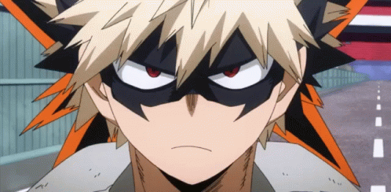
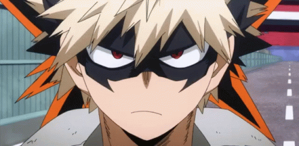

| ESTATUS | |||
| ESTADO | Desconocido (MUERTE TEMPORAL) | ||
|---|---|---|---|
| LUGAR DE NACIMIENTO | Cerca de la Prefectura de Shizuoka | ||
| AFILIACIÓN | Academia U.A. | ||
| OCUPACIÓN | Estudiante | ||
DON: EXPLOSIÓN
El Don de Katsuki le permite segregar nitroglicerina a través del sudor de sus manos y detonarlo a voluntad para crear explosiones.
Cuanto más suda Bakugo, más fuertes son sus explosiones. Como lo indicó Best Jeanist, Katsuki tiene una comprensión fuerte en las aplicaciones de su Don.
Usualmente usa explosiones pequeñas y poderosas de sus manos para no solo explotar a sus oponentes, sino para impulsarse a sí mismo y movilizarse por el aire también,
entre otras utilidades no relacionadas al combate.
ESTADÍSTICAS
 


EQUIPO/PODERES
Katsuki sufre algo del impacto de sus explosiones debido a la magnitud que pueda tener pero el efecto total es mínimo dado su acondicionamiento físico. Él es capaz de activar explosiones constantes a su alrededor sin sentir ninguna repercusión negativa, incluso después de muchas explosiones de gran alcance. Sin embargo, el uso excesivo puede resultar en que Bakugo acabe hiriendo sus brazos de la fuerza de las explosiones de gran alcance.

- Blast Rush Turbo: Katsuki ubica las manos hacia atrás y luego lanza múltiples explosiones en sus palmas, para impulsarse y correr más rápido.
- Stun Grenade: Katsuki forma un cilindro con una mano sobre la palma de la otra cuando causa una explosión para concentrar su fuerza en un solo punto.
- Zero Distance Stun Grenade: Katsuki se acerca a su oponente y a quemarropa realiza una explosión con sus dos manos.
- AP Shot: Katsuki estira uno de sus brazos abriendo su palma en la dirección escogida y en ella pone su otra mano formando una especie de círculo.
- Auto-Cannon: Es una derivación de la técnica AP Shot, ésta es más rápida y la potencia de la explosión se reduce con el fin de no dañar gravemente a personas que se encuentren cerca del área del usuario.

BÁSICOS